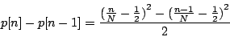
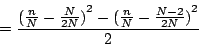
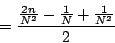
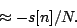
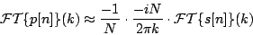
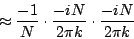
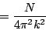
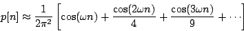

Next: Square and symmetric triangle
Up: Fourier series of the
Previous: Sawtooth wave
Contents
Index
The same analysis, with some differences in sign and normalization, works
for parabolic waves. First we compute the difference:




So (again for  , small compared to
, small compared to  ) we get:
) we get:



and as before we get the Fourier series:

Miller Puckette
2006-12-30